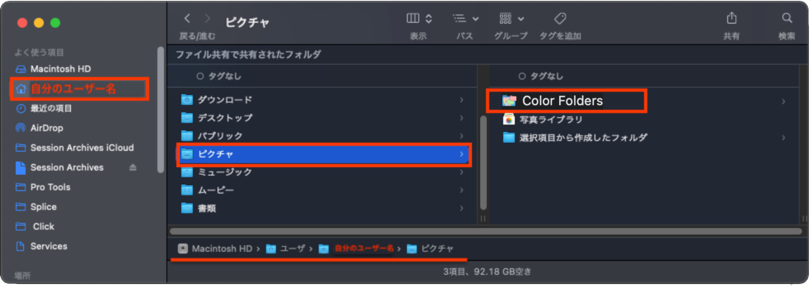

1
Put “Color Folders” into Pictures.
Place the “Color Folders” folder inside your user Pictures folder. The Quick Actions refer to the icon files and helper tool in this folder.
Do not rename or move it after installation. The Quick Actions will not work correctly if the folder path changes.
